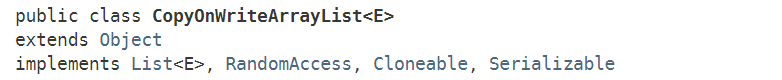

ArrayList是一种“列表”数据机构，其底层是通过数组来实现元素的随机访问。JDK1.5之前，如果想要在并发环境下使用“列表”，一般有以下3种方式：
Collections.synchronizedList返回一个同步代理类；前两种方式都相当于加了一把“全局锁”，访问任何方法都需要首先获取锁。第3种方式，需要自己实现，复杂度较高。
JDK1.5时，随着J.U.C引入了一个新的集合工具类——CopyOnWriteArrayList：

大多数业务场景都是一种“读多写少”的情形，CopyOnWriteArrayList就是为适应这种场景而诞生的。
CopyOnWriteArrayList，运用了一种“写时复制”的思想。通俗的理解就是当我们需要修改（增/删/改）列表中的元素时，不直接进行修改，而是先将列表Copy，然后在新的副本上进行修改，修改完成之后，再将引用从原列表指向新列表。
这样做的好处是读/写是不会冲突的，可以并发进行，读操作还是在原列表，写操作在新列表。仅仅当有多个线程同时进行写操作时，才会进行同步。
CopyOnWriteArrayList的字段很简单：
public class CopyOnWriteArrayList<E>
implements List<E>, RandomAccess, Cloneable, java.io.Serializable {
/**
* 排它锁, 用于同步修改操作
*/
final transient ReentrantLock lock = new ReentrantLock();
/**
* 内部数组
*/
private transient volatile Object[] array;
}
其中，lock用于对修改操作进行同步，array就是内部实际保存数据的数组。
构造器定义
CopyOnWriteArrayList提供了三种不同的构造器，这三种构造器最终都是创建一个数组，并通过setArray方法赋给array字段：
/**
* 空构造器.
*/
public CopyOnWriteArrayList() {
setArray(new Object[0]);
}
仅仅是设置一个了大小为0的数组，并赋给字段array：
final void setArray(Object[] a) {
array = a;
}
/**
* 根据已有集合创建
*/
public CopyOnWriteArrayList(Collection<? extends E> c) {
Object[] elements;
if (c.getClass() == CopyOnWriteArrayList.class)
elements = ((CopyOnWriteArrayList<?>) c).getArray();
else {
elements = c.toArray();
// c.toArray might (incorrectly) not return Object[] (see 6260652)
if (elements.getClass() != Object[].class)
elements = Arrays.copyOf(elements, elements.length, Object[].class);
}
setArray(elements);
}
/**
* 根据已有数组创建.
*
* @param toCopyIn the array (a copy of this array is used as the
* internal array)
* @throws NullPointerException if the specified array is null
*/
public CopyOnWriteArrayList(E[] toCopyIn) {
setArray(Arrays.copyOf(toCopyIn, toCopyIn.length, Object[].class));
}
查询——get方法
public E get(int index) {
return get(getArray(), index);
}
private E get(Object[] a, int index) {
return (E) a[index];
}
可以看到，get方法并没有加锁，直接返回了内部数组对应索引位置的值：array[index]
添加——add方法
public boolean add(E e) {
final ReentrantLock lock = this.lock;
lock.lock();
try {
Object[] elements = getArray(); // 旧数组
int len = elements.length;
Object[] newElements = Arrays.copyOf(elements, len + 1); // 复制并创建新数组
newElements[len] = e; // 将元素插入到新数组末尾
setArray(newElements); // 内部array引用指向新数组
return true;
} finally {
lock.unlock();
}
}
add方法首先会进行加锁，保证只有一个线程能进行修改；然后会创建一个新数组（大小为n+1），并将原数组的值复制到新数组，新元素插入到新数组的最后；最后，将字段array指向新数组。
上图中，ThreadB对Array的修改由于是在新数组上进行的，所以并不会对ThreadA的读操作产生影响。
删除——remove方法
public E remove(int index) {
final ReentrantLock lock = this.lock;
lock.lock();
try {
Object[] elements = getArray();
int len = elements.length;
E oldValue = get(elements, index); // 获取旧数组中的元素, 用于返回
int numMoved = len - index - 1; // 需要移动多少个元素
if (numMoved == 0) // index位置刚好是最后一个元素
setArray(Arrays.copyOf(elements, len - 1));
else {
Object[] newElements = new Object[len - 1];
System.arraycopy(elements, 0, newElements, 0, index);
System.arraycopy(elements, index + 1, newElements, index, numMoved);
setArray(newElements);
}
return oldValue;
} finally {
lock.unlock();
}
}
删除方法和插入一样，都需要先加锁（所有涉及修改元素的方法都需要先加锁，写-写不能并发），然后构建新数组，复制旧数组元素至新数组，最后将array指向新数组。
其它统计方法
public int size() {
return getArray().length;
}
public boolean isEmpty() {
return size() == 0;
}
迭代
CopyOnWriteArrayList对元素进行迭代时，仅仅返回一个当前内部数组的快照，也就是说，如果此时有其它线程正在修改元素，并不会在迭代中反映出来，因为修改都是在新数组中进行的。
public Iterator<E> iterator() {
return new COWIterator<E>(getArray(), 0);
}
static final class COWIterator<E> implements ListIterator<E> {
/**
* Snapshot of the array
*/
private final Object[] snapshot;
/**
* Index of element to be returned by subsequent call to next.
*/
private int cursor;
private COWIterator(Object[] elements, int initialCursor) {
cursor = initialCursor;
snapshot = elements;
}
public boolean hasNext() {
return cursor < snapshot.length;
}
public E next() {
if (!hasNext())
throw new NoSuchElementException();
return (E) snapshot[cursor++];
}
// ...
}
可以看到，上述iterator方法返回一个迭代器对象——COWIterator，COWIterator的迭代是在旧数组上进行的，当创建迭代器的那一刻就确定了，所以迭代过程中不会抛出并发修改异常——ConcurrentModificationException。
另外，迭代器对象也不支持修改方法，全部会抛出UnsupportedOperationException异常。
CopyOnWriteArrayList的思想和实现整体上还是比较简单，它适用于处理“读多写少”的并发场景。通过上述对CopyOnWriteArrayList的分析，读者也应该可以发现该类存在的一些问题：
1. 内存的使用
由于CopyOnWriteArrayList使用了“写时复制”，所以在进行写操作的时候，内存里会同时存在两个array数组，如果数组内存占用的太大，那么可能会造成频繁GC,所以CopyOnWriteArrayList并不适合大数据量的场景。
2. 数据一致性
CopyOnWriteArrayList只能保证数据的最终一致性，不能保证数据的实时一致性——读操作读到的数据只是一份快照。所以如果希望写入的数据可以立刻被读到，那CopyOnWriteArrayList并不适合。